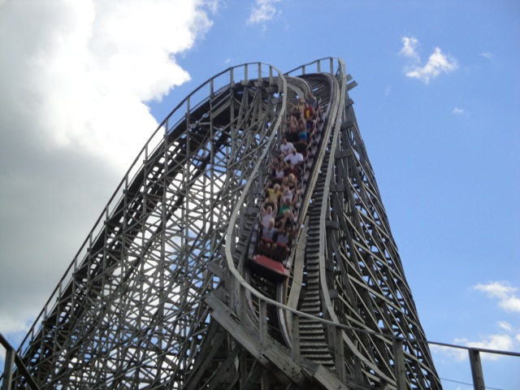
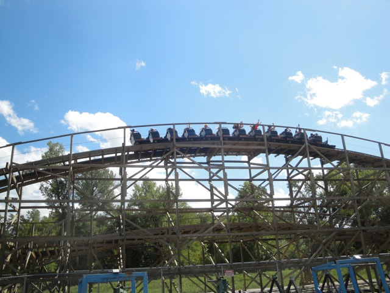
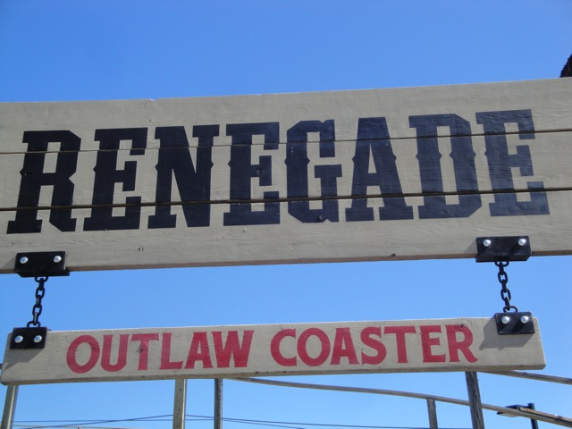

| |
Renegade Review

We're here at Valleyfair. Today, we're here to review Renegade, one of the better GCIs that we've ridden at Incrediblecoasters and definetly the best coaster in Valleyfair. You pull down the orange lap bar and away we go. You roll around a turn and a small dip before climbing up the lifthill. You get a good look at Renegade's twisted wooden mess as you climb the lifthill. We then reach the top, you lean over the edge, and down we go. The first drop on Renegade is my personal favorite on any GCI coaster. It's just so fun. You lean to the left as we drop down, just to twist to the right mid drop. Its got some good laterals, gives us a lot of speed, and is just a really good first drop. After that excellent first drop, we roar straight up into a small bunny hop. And yep. There's some really good floater air right here. We rip through it, floating out of our seats, head back to the ground, asses touch the seat. We then twist up a spiral turnaround, getting some awesome laterals, and not losing too much speed as we rise up. We then go through a small turn, head down a drop, that gives us some airtime and speed as we fall straight to the ground, go through another slight turn and BAM!!!!! Another tiny hill filled with...yep. You guessed it. AIRTIME!!!!! =) We then rip through a small banked right turn that provides us with some seriously awesome laterals, only to go through another fast banked left turn, giving us more laterals in the other direction. We then rise up a small hill, before going through a turn. This is the only real break in the ride to catch your breath, as after that, its all just high paced fast...Oops. Too late. We dropped down and are now in a low to the ground banked turnaround. This feels much faster than it really is, and yeah. Lots of laterals are featured here. Another quick banked hill that gives us a nice pop of airtime, before a slight turn under the structure and rising up into a small bunny hop. There's not much airtime on this hill, but we do see the station now. But don't worry. Renegade isn't over just yet. We go down a drop and turn to the right before going through another banked turnaround, giving us some really nice laterals. We go through a small bunny hop under a shed, giving us some good airtime and a head chopper before going through some bunny hop laterals. We then go through a final turnaround, flying at high speeds, getting good laterals. And yeah. We're heading into the brake run now. Yeah, as you can clearly tell, Renegade is an awesome wooden coaster. And yeah. It's fun and all, but make sure you ride it at night. Renegade at night is f*cking amazing. You will have a blast. Make sure you ride this at Valleyfair. It is totally worth the wait.
8/10
Location: Valleyfair
Opened: 2007
Built by: Great Coasters International
Last Ridden: August 15, 2010
Renegade Photos





|